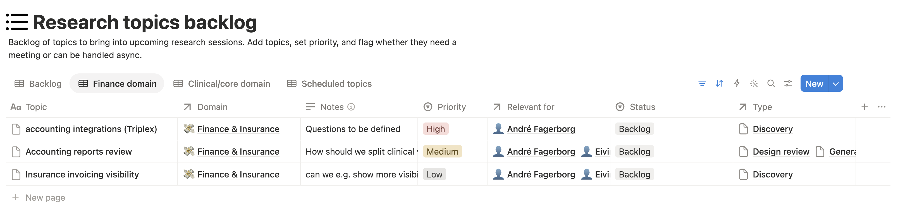

CONTINUOUS USER RESEARCH
Borrowing practitioner expertise to rebuild a desktop application on the web.
- ROLE
- Product designer and session lead
- TEAM
- Me, with support from PM and designers
- CADENCE
- A two week cycle, still running
- CONTEXT
- Desktop to web application migration
Nordhealth was rebuilding therapy workflows from legacy Desktop products as a web platform, then moving customers onto it. None of us had spent a working day inside those products, and our feedback channels only told us how people felt about what had already shipped. Feature parity is easy to promise and hard to define, so we asked the people who knew, every two weeks, before we built.
Parity, the easy definition Does the new screen have everything the old one had?
Parity, the definition we designed against Can a practitioner still get through their day without slowing down?
PARITY WITH WHAT, EXACTLY?
A Desktop product in daily use for years accumulates practitioner habit: a shortcut here, a field order there, a report someone opens fourteen times a day. From outside it all looks like features. From inside, some is essential, some incidental, and some a workaround for a limitation the web version does not have.
We were designing the replacement without that knowledge. Guess wrong one way and you rebuild dead weight. Guess wrong the other way and you remove the step that held someone's day together. One burns engineering time, the other returns later as support load and a migration that stalls.
TWO PRACTITIONERS, ON PURPOSE
We ran recurring sessions with two practitioners whose days look nothing alike: a physiotherapist, and a psychologist. Each cycle took our live questions to them: what we were about to build, what had just shipped, and which Desktop behaviour we did not understand well enough to replace.
The goal was never statistical representation. It was continuity. The same two people every cycle let us watch confidence move: whether a workflow that confused them in March had settled by May.
We knew the platform. They knew the day.
Neither argued about moving to the web. Confidence moved on specifics: a shortcut that no longer existed, a field that had moved, a task that now took four clicks instead of one. None of that shows up in a feature list, and all of it is obvious within thirty seconds of watching someone work.
A RHYTHM, NOT A STUDY
A one-off study gives you a snapshot, and a rebuild is not a snapshot. Work arrives in waves, so a session in March cannot answer the question that turns up in May. We designed a rhythm instead, and protected half of it for thinking.
In week A the team picks the most urgent questions from the backlog. I prepare lightweight material, share it in advance, and run the sessions later that week, each leading our own domain. Week B is synthesis in Dovetail, a short summary to product and design, follow-ups in Slack, and new questions back into the backlog.
HOW THE LOOP WORKED
-
01. CAPTURE UNCERTAINTY
Topics arrive from support tickets, onboarding surveys, PostHog, previous sessions, roadmap gaps in Linear, and CS or sales conversations.
-
02. PRIORITISE THE BACKLOG
Every other Monday the team picks one to three topics by urgency and migration risk. Anyone can add to the list.
-
03. PREPARE LIGHTLY
Focused prompts, a prototype, or a staging task, depending on what the question needs. Never a script.
-
04. SIT WITH PRACTITIONERS
Andre and Eyvind walk their real workflows, react to designs, test builds, and say what has annoyed them since last time.
-
05. SYNTHESISE AND SHARE
Analysis in Dovetail, then a short summary to product and design. Decision support, not research theatre.
-
06. FEED THE NEXT CYCLE
Clarifications continue in Slack. New questions become backlog topics, and the loop turns again.

IMAGE · RESEARCH TOPICS BACKLOGFOUR RISKS, SIX WAYS TO ASK
Every session pointed at one of four risks, so findings could be compared across cycles rather than collected as anecdotes.
- MIGRATION GAPS What is missing, broken, or harder to complete than it was in Physica or Psykbase?
- WORKFLOW FIT Can practitioners still finish their core work at clinical speed?
- FEATURE READINESS Does upcoming work match real needs before we spend engineering on it?
- ADOPTION FRICTION Where do people get stuck, confused, or pushed into extra effort?
The backlog let us move between strategic and tactical. One cycle asked whether the new sidebar supported daily navigation; another tested group appointment scoping, booking statuses, invoice creation, or the split between clinical and accounting reports.
Format followed the question: workflow walkthroughs to see real work, discovery to surface unknowns, design reviews before engineering spend, feature testing in staging or behind flags, and async video when something was easier to record than describe.
DECISIONS BEHIND THE PROCESS
- A standing rhythm, not ad hoc research
- Migration risk arrives in instalments as more workflows move. A fixed slot means the team can raise a question on Monday and have practitioner evidence the same week.
- A backlog, not a script
- Anyone can add a topic the moment uncertainty appears. Choosing one to three per cycle keeps sessions aimed at what is live, instead of a plan written weeks ago.
- Processing time is part of the system
- Week B exists so synthesis is not something that happens if there is time. It is why findings land while product and migration decisions are still open.
- Lightweight outputs, fast
- Dovetail notes, a short summary, a Slack thread. A polished report that arrives after the call has been made is worth nothing.
WHAT CHANGED
The loop gave the team Desktop expertise on tap. Parity stopped being a guess at a feature list and became specific answers: this behaviour matters, this one was a workaround, this one nobody will miss. A cheaper conversation before a build than after one.
- Features were shaped by practitioner evidence before engineering spend, not corrected after release.
- Parity gaps surfaced while they were still design questions, not support tickets.
- Migration and onboarding could be planned around the workflows people actually lean on.
- Roadmap work was tested against a real clinical day while changes were still cheap.
- Design, product, CS, and migration teams built one shared picture of the Desktop day.
FROM FINDING TO DECISION
Invoice status visibility arrived in the backlog as a low priority question: could practitioners see enough about where an insurance invoice stood? In isolation it reads like a small usability gap. In context it decides whether someone trusts they have been paid, or goes hunting through another system to check.
TO CONFIRM: what this changed. The design, the migration sequencing, or the support material that came out of it.
WHAT I WOULD IMPROVE
Two practitioners is a thin sample, and I would not defend it as representative. It was a deliberate trade: depth and continuity with people who trusted us enough to be blunt, over a broader study arriving once and too late. The next version widens the loop and tracks each insight through to resolution, so the process can show its own hit rate.
The wider lesson: when you rebuild someone else's tool, the expertise you are missing is theirs. Design the loop that borrows it and parity stops being a guess.